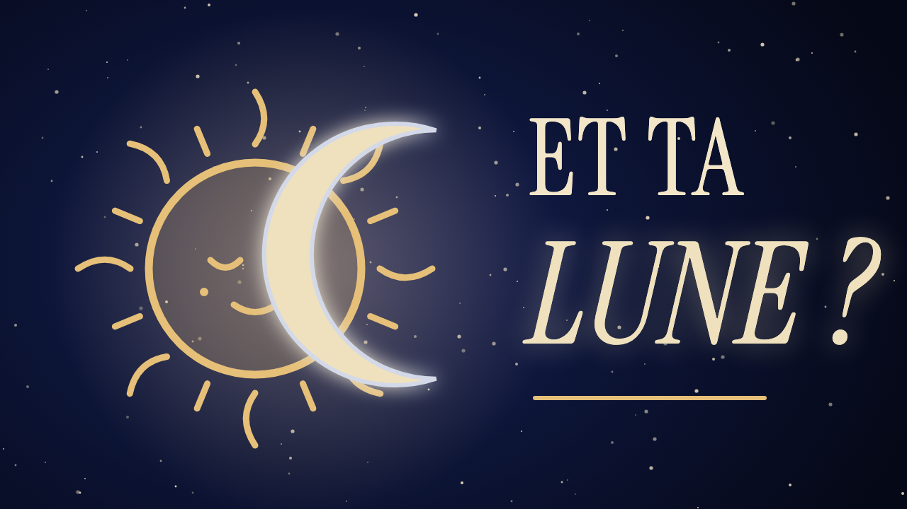

AuraLuna est une chaîne YouTube francophone (titres, descriptions et sous-titres aussi en anglais). On y explique simplement l'astrologie, par exemple la différence entre signe solaire et signe lunaire, et chaque épisode se termine par une courte méditation guidée.

Retrouve-nous sur YouTube : youtube.com/@auraluna · Instagram : @aura.luna
AuraLuna Publisher est l'outil interne de l'équipe AuraLuna. Il utilise les services API YouTube (YouTube Data API v3) pour mettre en ligne nos propres vidéos sur notre propre chaîne : fichier vidéo, titre, description, mots-clés, miniature, sous-titres et traductions. Il répond aussi, au nom de la chaîne, aux commentaires laissés sous nos vidéos, et lit les statistiques de notre chaîne pour préparer les prochains épisodes.
Cet outil n'est pas proposé au public : seul le compte Google propriétaire de la chaîne AuraLuna s'y connecte. Son fonctionnement et les données qu'il utilise sont décrits dans notre politique de confidentialité et nos conditions d'utilisation. En l'utilisant, on accepte les conditions d'utilisation de YouTube.
EnglishAuraLuna is a French-language YouTube channel (with English titles, descriptions and subtitles). We explain astrology in simple terms, such as the difference between your sun sign and your moon sign, and every episode ends with a short guided meditation.
AuraLuna Publisher is the AuraLuna team's internal tool. It uses YouTube API Services (YouTube Data API v3) to upload our own videos to our own channel, with their title, description, tags, thumbnail, captions and translations, replies as the channel to comments left on our videos, and reads our own channel statistics to plan future episodes.
It is not offered to the public: only the Google account that owns the AuraLuna channel signs in to it. See our Privacy Policy and Terms of Service. By using it, you agree to be bound by the YouTube Terms of Service.